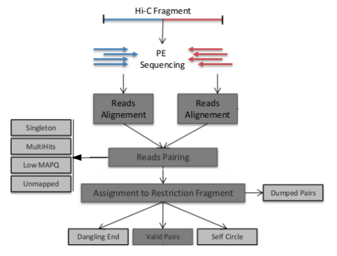

Each fragment contains two sequences from different parts of genome, i.e. genomic regions which are close in 3D space but distal on the linear genome.
How do we get from raw reads to a matrix? Typically a pipeline is used to process Hi-C data, today we are using a tool called HiC-Pro.

Briefly, reads are mapped to a reference, quality control is performed and fragments may be rejected, our pairs of valid interactions are binned into a matrix, finally this is balanced to prevent bias.
The first stage is mapping raw reads to our reference genome;
Standard mapping tools (here bowtie2) and formats (fastq) are used but the alignment procedure differs.
These are mapped against our reference genome, and although reads are paired end, we map them in single end mode, so each mate is mapped independently.
There are several sources of error unique to the HiC method which need to be filtered.
Some errors in the library are expected, for example problems with ligation;
Dangling End - unligated fragments
Self Circle - fragments ligate to themselves
Reads may also be removed based on quality score, size etc.
This will be handled by the pipeline which gives you reports of the filtering required at each stage.
It runs from the command line using a configuration file.
http://bifx-core3.bio.ed.ac.uk/Dan/Training/HiC_Workshop/files/config.txt
cp /homes2/drober19/hic_workshop/config.txt .This is already set up for the test data, have a look at the options;
less config.txt*press ‘q’ to exit
If you needed to change this, open this in a text editor such as nano and edit lines as needed;
#nano config.txtWe should already have our fastq files (*see Getting started), note HiC-Pro expects a folder for each sample under the INPUT folder;
/test_data /dixon_2M /dixon_2M_2
With two reads (*_R1/*_R2) in each sample folder;
/test_data/dixon_2M
SRR400264_00_R1.fastq
SRR400264_00_R2.fastq
/test_data/dixon_2M_2
SRR400264_01_R1.fastq
SRR400264_01_R2.fastq
These contain both read and quality information.
head test_data/dixon_2M_2/SRR400264_01_R1.fastq@SRR400264.250001 HWI-ST216_0180:3:1101:17686:30917 length=36
TATAGGGGCATGTTCAGATAAGTCACTTGTAAATAA
+SRR400264.250001 HWI-ST216_0180:3:1101:17686:30917 length=36
HHHHHHHHHHHHHHHHHHGHHHHHHHHHHHHHHHHH
Several Annotation files need to be specified in the config, these contain information about our reference genome. HiC-Pro comes complete with human hg19 annotation files, so we don’t need to do anything here.
For reference the files look like this; http://bifx-core3.bio.ed.ac.uk/Dan/Training/HiC_Workshop/files/
A BED file giving the size of each chromosome.
chr1 249250621
chr2 243199373
chr3 198022430
A BED file with the restriction fragments sites in our reference (HiC-Pro contains a tool to create this).
chr1 0 16007 HIC_chr1_1 0 +
chr1 16007 24571 HIC_chr1_2 0 +
chr1 24571 27981 HIC_chr1_3 0 +
It also requires The bowtie2 indexes, these are already available on our server; /homes/genomes/human/hg19/bowtie2_indexes
The pipeline runs using a single command;
HiC-ProYou just need to specify three arguments;
-i input directory -o output directory -c configuration file
HiC-Pro -i test_data -o dixon_out -c config.txtThe mapping works in two steps, first the entire read is aligned and in cases where reads span the ligation junction those reads are trimmed (3*) and mapped again.
This is normally a lengthy process (hours/days) as there are large numbers of reads and contacts which need to be processed. This small data set should only take around 3 minutes. Note, HiC-Pro can be run in a sequential (step by step) mode if needed.
HiC-Pro gives us different output folders, with QC reports, intermediate data and matrix files (*note these matrix files are in triple sparse format and not useful for us today).
Once this has finished lets have a look at the output directory
ls dixon_out/There are QC reports for each sample under; dixon_out/hic_results/pic/
You should be able to find them in your public_html page;
https://bifx-core3.bio.ed.ac.uk/~USERNAME/Hi-C_workshop/dixon_out/hic_results/pic/dixon_2M/
^edit your USERNAME
Rather than looking through individual reports for each sample, lets use a tool called MultiQC to aggregate everything;
multiqc dixon_out/*https://bifx-core3.bio.ed.ac.uk/~USERNAME/Hi-C_workshop/dixon_out/multiqc_report.html
From out limited number of reads (~250,000), how many valid pairs do we have?
What reads are being filtered out? What do you think may have gone wrong experimentally?